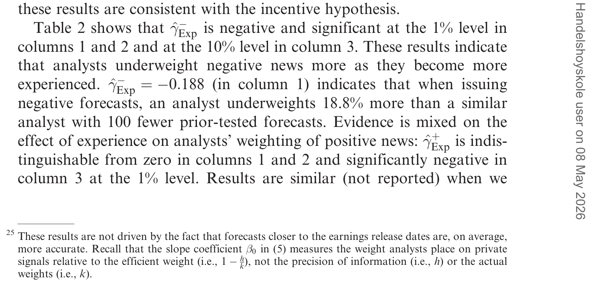
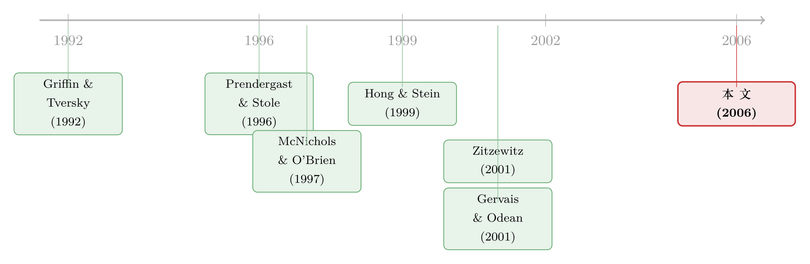

分析师到底该信「自己」几分？——一道把「私心」和「自负」分开的算术
本文读的是 Chen & Jiang (2006, Review of Financial Studies)：用一个回归法和一个概率法去量分析师在预测公司盈余时，到底给「自己的私有信息」压了多大的权重。结论是——平均而言他们过度加权了私有信息；而且当预测比市场共识更乐观时加权更狠，更悲观时反而压低甚至低估。最关键的一步，是作者构造了一个只依赖信息精度、与加权策略无关的能力度量，用它把「为私利而夸大」和「因自负而夸大」这两种解释干净地分开。答案是：私心的成分，比自负更大。
1 引言：一个被「混在一起」的老问题
卖方分析师（sell-side analyst）的预测「不靠谱」，几乎是金融学里被研究得最多的事实之一。他们的盈余预测系统性地偏乐观，准确度也时常不如一个简单的时间序列模型。于是文献热闹了几十年：有人说这是行为偏差——分析师过度自信、对自己覆盖的公司抱有乐观先验；也有人说这是激励使然——为了讨好管理层、为了拉到投行业务、为了显得「有本事」从而带来交易佣金。
但这里有一个一直没被解开的死结。
我们能观察到的，是预测的「性质」（properties）：它有多偏、有多准。可问题在于——预测的性质，是信息精度和分析师行为两件事共同决定的。一个用了完美贝叶斯权重的分析师，如果他的信息本来就糙，预测照样可以很不准；而一个胡乱加权的分析师，只要私有信息足够精，预测反而可能更准。换句话说，光看「偏」和「准」，你根本说不清这个人到底是信息差还是行为差，更别说去区分「他是故意的，还是不自觉的」。
所以 Chen 和 Jiang 决定换一个角度：不去看预测的性质，而去直接量分析师的加权行为（weighting behavior）——他在「自己的私有信息」和「市场已知的公共信息」之间，到底是怎么分配信任的。
这篇文章在我看来真正的漂亮之处，不是它发现了「过度加权」（那并不新鲜），而是它造出了一把与加权策略正交的能力尺子，从而第一次能在大样本里把「激励」和「认知偏差」掰开。这才是全文的「核心」，下面我们会反复回到它。
2 一个最小的贝叶斯模型
要谈「过度加权」，得先有「正确加权」是什么的基准。作者搭了一个极简的模型。
令公司的真实盈余为 \(z\)，不失一般性地假设它服从一个零均值的弥散正态分布。分析师手里有两类信息：一类是大家都看得见的公共信息（public information），用一个充分统计量 \(c\) 概括，称作市场共识（consensus）；另一类是只有他自己有的私有信息（private information），记作 \(y\)。两者都是对 \(z\) 的带噪观测：
$$c = z + \varepsilon_c, \qquad \varepsilon_c \sim N\!\left(0, \tfrac{1}{p_c}\right)$$
$$y = z + \varepsilon_y, \qquad \varepsilon_y \sim N\!\left(0, \tfrac{1}{p_y}\right)$$
这里 \(p_c\)、\(p_y\) 分别是公共信息和私有信号的精度（precision，方差的倒数）。由贝叶斯法则，分析师对 \(z\) 的最优估计是两者的加权平均：
$$E[z \mid y, c] = h\,y + (1-h)\,c, \qquad h \equiv \frac{p_y}{p_c + p_y} \in [0,1]$$
这个 \(h\) 就是有效权重（efficient/Bayesian weight）。它有一个非常干净的含义：\(h\) 完全由私有信号相对公共信息的精度决定。一个能力强（私有信息更精）的分析师，\(h\) 天生就更大。
可现实里分析师未必用 \(h\)。设他实际采用的预测策略是
$$f = k\,y + (1-k)\,c$$
其中 \(k\) 是他真正压在私有信号上的权重。于是作者给出了核心定义：若 \(k > h\)，称该分析师过度加权（overweight）私有信息；若 \(k < h\)，则加权不足（underweight）。注意度量是 \(k/h\)（实际权重除以有效权重），而不是 \(k-h\)——这一点后面会变得很重要。
3 识别策略：怎么在「看不见 y」的情况下测出 k 和 h 的关系
难点来了。研究者能看到分析师的预测 \(f\)、能算出共识 \(c\)，但看不见他的私有信号 \(y\)、看不见精度 \(h\)、更看不见他压的权重 \(k\)。怎么办？
作者的洞见是：预测误差和「预测偏离共识的幅度」之间的关系，会泄露加权信息。
首先，定义预测误差 \(FE = f - z\)，以及预测对共识的偏离 \(Dev = f - c\)。如果分析师高效加权（\(k=h\)），那么他的预测误差不应该能被 \(Dev\) 预测——因为 \(Dev\) 里的信息他已经最优地用掉了。但如果他过度加权，\(Dev\) 就会系统性地预示 \(FE\)。把这层关系写出来：
于是第一个方法——回归法（regression-based method）——就有了。直接跑
$$FE = \delta + \beta_0 \cdot Dev + \varepsilon$$
估计出的 \(\hat\beta_0\) 依概率收敛到 \(1 - h/k\)。\(\hat\beta_0 > 0\) 说明平均而言过度加权，\(\hat\beta_0 < 0\) 说明加权不足。简洁得近乎优雅。
接着，一个自然的问题是：回归法对异常值和测量误差很敏感，而分析师数据恰恰以「脏」著称。于是作者引入了第二个、也是文献里第一次出现的方法——概率法（probability-based method）。它的思路更朴素：如果分析师高效加权，那么他的预测「冲过头」（与 \(Dev\) 同号地错）和「没够着」应该各占一半。于是定义
$$\pi = \Pr\big(\mathrm{sign}(FE) = \mathrm{sign}(Dev)\big)$$
在高效加权的原假设下 \(\pi = 0.5\)；\(\pi > 0.5\) 意味着过度加权。这个统计量的好处是每一对 \(\{FE, Dev\}\) 的贡献相等，与幅度无关，因此对离群值极其稳健。
这两个方法分别捕捉了误加权的平均幅度（\(\beta_0\)）和中位倾向（\(\pi\)），而两者给出一致的结论，正是作者信心的来源。作者用命题 1 严格证明了二者与高效加权的等价关系。
这里有个容易被忽略的陷阱，也是本文的另一处刀锋。以往文献喜欢用「预测离共识有多远」（forecast distance）来代理分析师的大胆或羊群倾向。但作者推导出 $$E(f-c)^2 = k^2\,E(y-c)^2 = k^2\!\left(\tfrac{1}{p_y}+\tfrac{1}{p_c}\right) = \left(\tfrac{k}{h}\right)^2 \tfrac{h}{p_c}$$ ——离共识的距离同时取决于能力（藏在 \(h\) 里）和策略（藏在 \(k/h\) 里）。所以一个高能力却保守加权的人，可能比一个低能力却激进加权的人离共识更近。用「距离」来度量羊群，是把两件事搅在了一起。
4 真正关键的一步：一把与策略无关的能力尺子
到这里我们能测出「平均过度加权」了。但这还不够——作者真正想回答的是为什么。
有两个竞争假说。激励假说（incentive hypothesis）说：分析师其实知道自己几斤几两，他故意夸大私有信息的新闻含量，要么是为了向市场发出「我有本事」的信号，要么是为了制造交易、赚取佣金 [Prendergast & Stole (1996)、Ehrbeck & Waldmann (1996)]。过度自信假说（overconfidence hypothesis）则说：分析师并不清楚自己的真实能力，在一连串好运之后因为归因偏差而高估了自己 [Griffin & Tversky (1992)、Gervais & Odean (2001)]。
问题是，这两个假说都预测「过度加权」。怎么分？
作者给出的识别钥匙，是一个只依赖信息精度、与加权策略无关的能力度量。具体地，他们把分析师的能力定义为：他的预测若被加进共识、能把共识推向真实盈余的方向的频率（即正文里的 Ability(Dir) 与 Ability(Beat)）。论文证明了一个关键性质——这个度量只取决于私有信号的相对精度 \(h\)，而不取决于他条件于能力之上选择的加权策略 \(k\)。
这一点为什么要命？因为标准的能力度量（绝对或相对预测准确度）做不到这一点——它们被策略「污染」了。而有了这把干净的尺子，两个假说就给出了可区分的预言：
- 激励假说：过度加权的代价与收益随能力变化，因此过度加权应与能力相关（高能力者发信号的边际收益不同）；
- 过度自信假说：误加权来自学习中的归因偏差，因此过度加权应与过往业绩（track record, TR）正相关，而在控制了 TR 之后与能力无关。
5 数据与主要结果
样本来自 Zacks 的分析师季度盈余预测，并配以 COMPUSTAT、CRSP、SDC（承销关系）以及手工整理的《机构投资者》All-American 评级。样本期 1985–2001（最后一笔预测在 2001 年 3 月，恰在 Reg FD 生效之前），并按惯例剔除均价低于 $5、市值低于 $100 million 的公司。最终共 1,367,599 条预测，覆盖 3195 家公司、5306 位分析师、51,200 个「分析师—公司」配对。
先看一张不带任何结构假设的图。图 1 用核回归画出 \(FE = f(Dev)\)，结果是一个清晰的 「V」形：\(Dev\) 为正时 \(FE\) 随之上升，\(Dev\) 为负时 \(FE\) 随之下降。Ellison & Ellison (2000) 的设定检验在 5% 水平上不拒绝每一段的线性，却在 1% 水平上拒绝整体的线性（即存在拐点）。这个 V 形本身就在讲故事——分析师在共识两侧的加权行为是不对称的。
而把不对称量化出来，就是本文最有味道的发现：
- 平均过度加权：\(\hat\beta_0 > 0\)、\(\hat\pi > 0.5\)，两种方法一致。分析师平均而言高估了自己私有信息的分量。
- 乐观加权（optimistic weighting）：当预测比共识更乐观时，分析师过度加权；当预测比共识更悲观时，他们加权不足、甚至低估私有信息。换句话说，他们总倾向于给「好消息」那一侧压更大的权重。
- 能力与过度加权负相关：用那把干净的能力尺子，过度加权随能力上升而下降；在控制能力之后才与 TR 正相关。
- 收益高、成本低时误加权更甚：覆盖重仓交易股票（潜在佣金高）时过度加权更多；投行关联（IB，雇主未来会替该公司承销）时乐观加权更强；而在职业生涯早期、以及临近盈余发布日（出错代价更高）时，误加权更少。
如表 2 所示，横截面回归里能力与过度加权之间那个交互项系数显著为负（在 1% 水平上），这正是「低能力者反而更激进地过度加权」的直接证据。

Table 2: shows that (cid:5)^(cid:4) is negative and significant at the 1% level in
把这些拼起来，箭头都指向同一个方向：误加权的程度随其收益升高、随其成本降低而系统性变化。而过度自信假说预言的是「分析师意识不到自己在误加权，因而误加权与成本收益无关」——数据并不支持它。于是反转出现了：长期以来被归咎于「行为偏差」的分析师乐观，至少有相当一部分是算计出来的。
这与本博客此前评述过的两篇 IPO 分析师文章遥相呼应——承销关系如何把分析师的「彩虹屁」变成一笔暗账（可参见《为什么「贵」的承销方式反而赢了？》与《上市之后，分析师的「彩虹屁」到底值不值钱？》）。本文则把这条「IB 激励」的逻辑，从 IPO 场景推广到了日常盈余预测的加权行为上。
6 文献脉络
这条研究线，是「分析师预测为什么不理性」这个大问题里的一支。
最早的源头分两支。行为一支由 Griffin & Tversky (1992) 关于过度自信的认知心理学奠基，后被 Gervais & Odean (2001) 用「学习中产生过度自信」的模型形式化；激励一支则来自 Prendergast & Stole (1996) 的声誉博弈——年轻人鲁莽、老手保守——以及 Ehrbeck & Waldmann (1996) 对「代理 vs 行为」的直接对照。

与此并行的，是关于乐观来源的争论：McNichols & O'Brien (1997) 用自选择和乐观先验解释覆盖偏差，而 Francis & Philbrick (1993)、Lim (2001) 则强调「讨好管理层」的激励。再往后，Zitzewitz (2001a) 第一次在大样本里测出了「夸大」，但他没有进一步区分这种夸大究竟来自策略还是自负——这恰恰是本文站立的位置。本文还顺手把乐观加权与几个看似无关的结论缝合了起来：它为「共识对过往信息究竟是过度还是反应不足」的矛盾提供了调和（早期 DeBondt & Thaler 1990 与 Abarbanell & Bernard 1992 各执一词），也呼应了 Hong & Stein (1999)「坏消息传得慢」的判断，还与 Welch (2000) 关于分析师在推荐上羊群的发现互补。
7 评论与延伸（Q&A + 研究方向）
Q：「过度加权私有信息」和「预测偏乐观」是一回事吗？
不是，这恰是本文要分清的。乐观偏差是关于预测水平（level）偏高；而过度加权是关于分析师对私有信号压了多大权重。乐观加权是二者的结合：在好消息那一侧过度加权、坏消息那一侧加权不足。作者明确论证了乐观加权「可与单纯的乐观偏差相区分」。
Q：能力为什么是「与策略正交」的，这个性质可信吗？
这是全文识别的命门。作者证明，用「预测若加进共识能否把共识推向真值」来度量能力，其期望只依赖私有信号的相对精度 \(h\)，而不依赖分析师在给定能力之上选择的 \(k\)。直觉是：能否把共识往真值方向拉，取决于你的信号含多少真信息（精度），而不取决于你事后怎么吆喝它（权重）。相比之下，绝对/相对准确度都被策略污染，所以不满足这个要求。
Q：发现「低能力者反而更过度加权」，不是和直觉反着来吗？
表面反直觉，实则是激励假说的自然推论，也是对既有文献的一记重拳。以往用「离共识的距离」度量羊群，得出「低能力、缺经验者爱抱团」。但本文的能力尺子显示：低能力者其实在反羊群（过度加权私有信息），高能力者反而加权不足。原因正是第 3 节那条 \(E(f-c)^2\) 公式——距离同时被能力和策略决定，用它度量羊群是错的。
Q：投行关联（IB）会不会只是「关联分析师本来就乐观」，而非「为承销而乐观」？
作者用的是未来承销关系（雇主在预测日前后五年内成为该公司主承销或联席承销）作为收益的代理。配合成本侧的代理（职业早期、临近发布日），多个维度一致指向「收益高/成本低时误加权更甚」，这比单看 IB 的横截面相关更难用「天生乐观」来解释。当然，IB 关系本身可能与公司特征相关，这是残留的担忧。
Q：样本止于 Reg FD 之前，结论还适用今天吗？
这是个真实的外部效度问题。Reg FD（2000 年生效）限制了选择性信息披露，理论上会压缩分析师私有信息的精度 \(h\)，从而改变加权的成本收益。本文样本恰好基本落在 Reg FD 之前，所以它刻画的是一个「私有信息更值钱」的旧世界。Reg FD 之后是否依旧过度加权，是个值得重做的问题。
Q：概率法真的比回归法「更好」吗，还是只是稳健？
它不是更优，而是互补。回归法度量平均幅度、概率法度量中位倾向；后者对离群值和测量误差稳健，前者能直接给出 \(1-h/k\) 的结构含义。作者反复强调，正是两法结论一致，才让人相信结果不是数据不规则造成的伪相关。
(b) 几个可能的研究问题与提案
- Reg FD 前后的加权行为断点
- 【经济故事】Reg FD 削弱了选择性披露，等价于压低私有信号精度 \(h\)。若加权是激励驱动的，成本收益结构变了，过度加权的程度也该随之移动；若纯是自负，则不该有系统变化。这是对本文核心论断的一次「外生冲击」检验。
-
【可行性】高。I/B/E/S 或 Zacks 预测数据跨越 2000 年，可直接套用本文的 \(\beta_0\) 与 \(\pi\) 估计，做事件窗口的前后对比，甚至用受 FD 影响程度不同的公司做双重差分 (difference-in-differences, DiD)。
-
把加权框架搬到公司债分析师 / 评级机构
- 【经济故事】信用分析师和评级机构同样在「私有尽调」和「市场价格（CDS、债券利差）」之间加权。其激励结构（发行人付费）与股票分析师不同，乐观加权的方向与强度可能截然不同。
-
【可行性】中。需要债券分析师的预测面板（较稀疏）或评级行动数据，以利差/CDS 隐含的违约预期作为「共识」。识别上可借本文的能力尺子，但债券事件较少、噪声更大，样本量是瓶颈。
-
外资持有人结构与分析师加权
- 【经济故事】当一家公司的边际投资者是信息劣势的外资时，分析师「夸大私有信息以发信号/拉佣金」的收益可能更高。可检验外资持股比例与该公司分析师过度加权程度的关系。
-
【可行性】中。需要分国别的机构持股数据（如 FactSet/13F 之外的跨境持股）匹配分析师预测。识别担忧是外资持股的内生性，需用指数纳入等外生变动做工具。
-
「乐观加权」与高分歧—低收益异象的微观对接
- 【经济故事】本文指出，分析师在有利消息时更偏离共识，因此高预测分歧可能对应被夸大的好消息、从而对应过高的当前价格——这正是 Diether, Malloy & Scherbina (2001) 高分歧低收益之谜的一个机制候选。
- 【可行性】高。可在分歧度排序的组合里，进一步用本文的 \(\pi\) 统计量度量「分歧中有多少来自乐观加权」，看它是否解释了未来低收益的横截面。数据与方法都现成。
参考文献
- Abarbanell, J. S., & Bernard, V. (1992). Analysts' Overreaction/Underreaction to Earnings Information as an Explanation for Anomalous Stock Price Behavior. Journal of Finance 47, 1181–1207.
- Chen, Q., & Jiang, W. (2006). Analysts' Weighting of Private and Public Information. Review of Financial Studies 19(1), 319–355.
- DeBondt, W. F. M., & Thaler, R. H. (1990). Do Security Analysts Overreact? American Economic Review 80, 52–57.
- Diether, K., Malloy, C., & Scherbina, A. (2001). Differences of Opinion and the Cross-Section of Stock Returns. Journal of Finance 57, 2113–2141.
- Ehrbeck, T., & Waldmann, R. (1996). Why are Professional Forecasters Biased? Agency versus Behavioral Explanations. Quarterly Journal of Economics 111, 21–41.
- Ellison, G., & Ellison, S. (2000). A Simple Framework for Nonparametric Specification Testing. Journal of Econometrics 96, 1–23.
- Francis, J., & Philbrick, D. (1993). Analysts' Decisions as Products of a Multi-Task Environment. Journal of Accounting Research 31, 216–230.
- Gervais, S., & Odean, T. (2001). Learning to be Overconfident. Review of Financial Studies 14, 1–27.
- Griffin, D., & Tversky, A. (1992). The Weighing of Evidence and the Determinants of Overconfidence. Cognitive Psychology 24, 411–435.
- Holmstrom, B. (1999). Managerial Incentive Problems: A Dynamic Perspective. Review of Economic Studies 66, 169–182.
- Hong, H., & Stein, J. (1999). A Unified Theory of Underreaction, Momentum Trading and Overreaction in Asset Markets. Journal of Finance 54, 2143–2184.
- Lim, T. (2001). Rationality and Analysts' Forecast Bias. Journal of Finance 56, 369–385.
- McNichols, M., & O'Brien, P. C. (1997). Self-Selection and Analyst Coverage. Journal of Accounting Research Supplement 35, 167–199.
- Prendergast, C., & Stole, L. (1996). Impetuous Youngsters and Jaded Old-Timers: Acquiring a Reputation for Learning. Journal of Political Economy 104, 1105–1134.
- Welch, I. (2000). Herding among Security Analysts. Journal of Financial Economics 58, 369–396.
- Zitzewitz, E. (2001a). Measuring Herding and Exaggeration by Equity Analysts and Other Opinion Sellers. Stanford University GSB Working Paper.